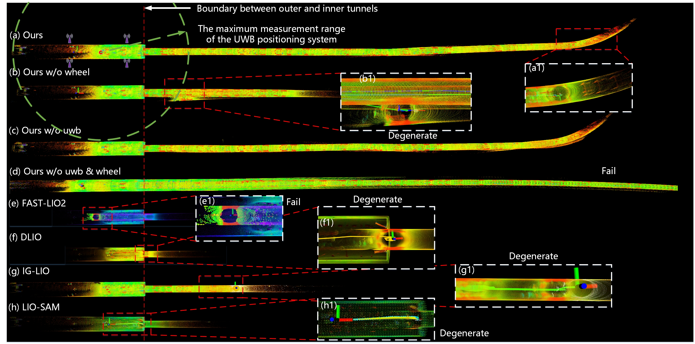
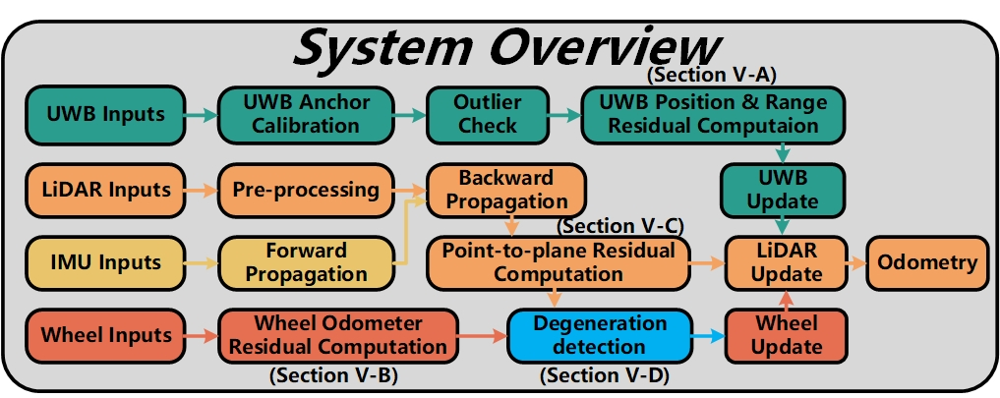

GPS-denied
No satellite reference underground means drift cannot be corrected by conventional GNSS.
LiDAR · IMU · UWB · WHEEL
Robust and High-Precision LiDAR-Inertial-UWB-Wheel Odometry for Extreme Degradation Coal Mine Tunnels
1 China University of Mining and Technology · 2 Information Institute, Ministry of Emergency Management

01 · The challenge
Long, repetitive coal mine tunnels create a rare combination of unavailable global positioning, weak geometric observability, slippery terrain, dust, and limited UWB deployment range.
No satellite reference underground means drift cannot be corrected by conventional GNSS.
Long, straight, repetitive surfaces weaken LiDAR observability and can trigger catastrophic degeneration.
UWB provides global constraints near anchors, but mine-scale coverage is expensive and spatially limited.
02 · The method
CM-LIUW-Odometry tightly couples heterogeneous measurements in a 36-dimensional IESKF state, then uses covariance decomposition to decide when wheel constraints should support a degenerating LiDAR–inertial estimate.

LiDAR–inertial estimation receives absolute UWB position and range constraints.
LiDAR and IMU carry the estimate while the covariance remains well conditioned.
NHC and lever-arm compensated wheel updates suppress drift beyond UWB range.
Aligns the local SLAM state with the total-station global frame and rejects range outliers.
Adds forward-motion information with nonholonomic constraints and calibrated lever-arm compensation.
Finds the direction and severity of weak observability without a fixed scene-specific motion policy.
03 · Real-world results
Experiments on the CUMT 5 platform compare the complete system against ablations and four state-of-the-art odometry methods in a long, extremely degraded underground tunnel.
Field demonstration
Watch the complete IROS 2025 demonstration, including the underground platform and mapping comparison.
Watch on Bilibili04 · Dataset
The underground ROS bag is publicly available through Baidu Netdisk. Calibration, total-station evaluation files, checksums, mirrors, and standalone dataset terms are still being prepared.
Baidu extraction code idnx
Extreme-degradation underground tunnel sequence collected by the CUMT 5 mobile robot.
05 · Citation
If CM-LIUW-Odometry contributes to your research, please cite the IROS 2025 paper.
@inproceedings{hu2025cmliuw,
author = {Kun Hu and Menggang Li and Zhiwen Jin and
Chaoquan Tang and Eryi Hu and Gongbo Zhou},
title = {{CM-LIUW-Odometry}: Robust and High-Precision
{LiDAR}-Inertial-{UWB}-Wheel Odometry for Extreme
Degradation Coal Mine Tunnels},
booktitle = {2025 IEEE/RSJ International Conference on
Intelligent Robots and Systems (IROS)},
year = {2025},
pages = {7139--7146},
doi = {10.1109/IROS60139.2025.11245914}
}